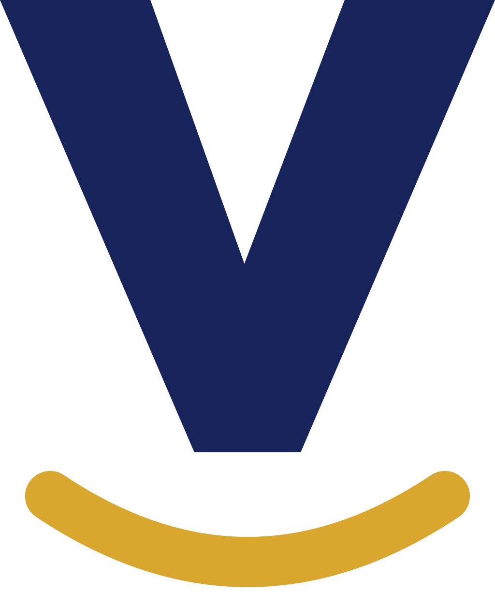
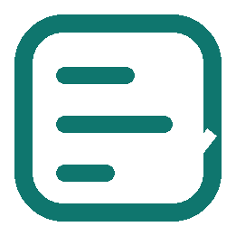
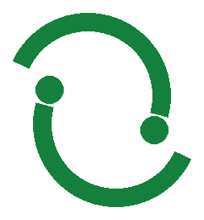
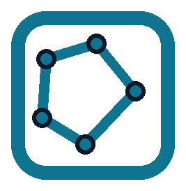
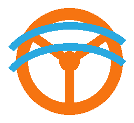
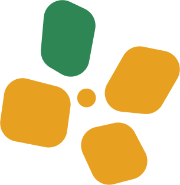
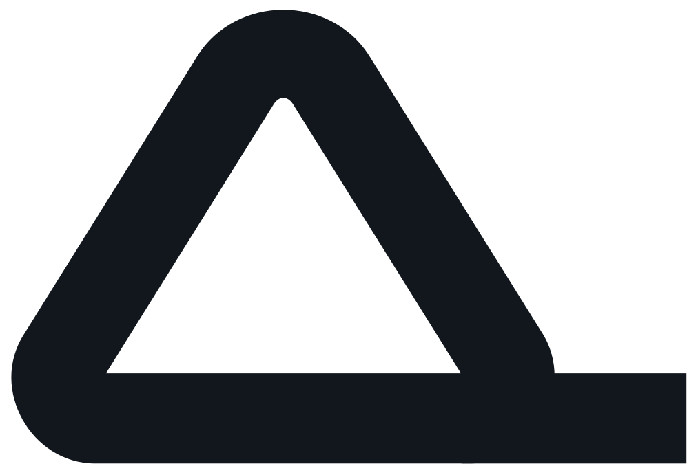

Create new revenue opportunities.
Launch an offering, recover qualified demand or give more people a clear route to buy, apply or participate.
Revenue & demandProduct Engineering. Without Limits.
AlphaIT Engineering deploys and builds the systems businesses, institutions and governments use to create revenue opportunities, improve services and strengthen critical operations.
Start with a system already engineered. Connect it to what you have. Build only what is missing.
What AlphaIT makes possible
We work where technology can open a valuable opportunity, improve an important service or remove an operating constraint.
Launch an offering, recover qualified demand or give more people a clear route to buy, apply or participate.
Revenue & demandConnect information and work so teams spend less time repeating, chasing and correcting it.
Cost & efficiencyPut evidence, responsibility and the next action into one operating view.
Service & controlUse a built system or focused engineering to turn an opportunity into a service people can use.
New services & growthSee AlphaIT at work
Choose what you want to achieve. See the AlphaIT system that carries the work, then see what becomes possible.
It needs to find the right opportunity, decide where to focus and move the work forward.
It researches the market, recommends the route, coordinates approved work across tools and channels, then learns from the result.
Explore Varren ↗Leaders see what happened, what worked, what should improve and which opportunity to pursue next.
Built by AlphaIT Engineering
License, deploy, integrate, configure or extend the system that already carries the hardest part of the work.
Meet every system ↗
Verdika
LisBon Signal Infrastructure (LSI)
LisCredit Marketplace
LisBon Flow Infrastructure (LFI)
Flow App
Pollenair
Focused AlphaIT BuildBuilt systems. Focused engineering.
If an AlphaIT system already fits the core need, we deploy it and connect it to your existing tools and data. If something is still missing, we engineer that part.
↗How we work
We agree what should improve or launch and how the change will be measured. Then we choose the strongest route to a working result.
Agree what should improve or launch, who it serves and what evidence will show that it works.
Deploy an AlphaIT system where it fits, connect what already exists or engineer the missing capability.
Confirm authority, data, integrations, responsibilities and acceptance checks. Test with the people who will use it.
Track the agreed outcome, learn from real operation and strengthen the system as the work changes.
Your next step
Show us the service, opportunity or operation. We will identify the strongest starting point and the evidence required to move forward.
projects@alphaitengineering.com